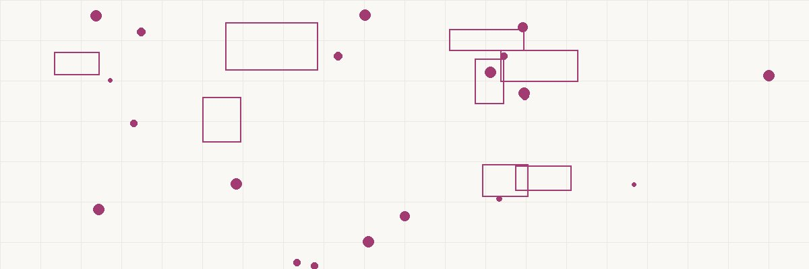

APPRECIATED ASSET DONOR-ADVISED CHARITABLE (Stock, Crypto) FUND GRANTS ───────────────── ═══════════════════ ───────────────── • Apple stock at ──╲ ╱── • Grant to any $10K basis, now ───╲ ┌───────────┐╱─── 501(c)(3) worth $100K ────╳─│ DAF ACCOUNT │─╳── • On YOUR timeline • Donate directly ───╱ └───────────┘╲─── • Invested & growing to the DAF ╱ ╲ • Anonymous option TAX BENEFITS: INSIDE THE DAF: FLEXIBILITY: ───────────────── ═══════════════════ ───────────────── • Deduction = FMV • Tax-free growth • No minimum grant ($100K) • No cap gains on • No time pressure • No cap gains tax the donation • Advise forever on the $90K gain • Compounds like IRA • Name successors • AGI limit: 30% • Legacy giving ──────────────────────────────────────────────── THE MATH: Sell stock & donate cash: pay $13,440 cap gains, deduct $86,560 Donate stock directly to DAF: pay $0 cap gains, deduct $100,000 Tax savings difference: ~$17,000 more in your pocket
FADE IN: A tastefully decorated wealth management office. JANET OKAFOR (45, sharp, a fiduciary advisor who actually earns her fees) sits across from DAVID WEINSTEIN (55, tech executive, philanthropically-minded but tax-allergic). DAVID I want to give a hundred grand to charity this year. My accountant says I should just write checks. But my stomach says there's a smarter way. JANET Your stomach is correct. How'd you make that hundred grand? DAVID Apple stock. Bought it fifteen years ago at ten thousand. It's worth a hundred now. JANET (leaning forward) David, if you sell that stock and donate the cash, you're going to pay capital gains tax on ninety thousand dollars of gain before you give a penny away. At 23.8%, that's $21,420 gone. You'd only have $78,580 to donate. DAVID That's... annoying. JANET What if you donated the stock directly — never sold it — and got a deduction for the full hundred thousand? Zero capital gains. Full deduction. Every dollar works for charity instead of the IRS. DAVID That sounds too good to be true. JANET It's a Donor-Advised Fund. And it's been blessed by the IRS since 2006.
Janet opens her laptop and pulls up a diagram. JANET A DAF is like a charitable investment account. You make an irrevocable donation into the fund — you get your tax deduction immediately. But you don't have to give the money to a specific charity right away. It sits in the fund, invested, growing tax-free, until YOU advise where it should go. DAVID I advise? So I still have control? JANET Advisory control. You recommend grants to qualified 501(c)(3) charities. The sponsoring organization technically approves them, but in practice, if it's a legit charity, they rubber-stamp it. You can grant ten thousand this year, fifty thousand next year, and forty thousand the year after. Or all at once. Or over twenty years. DAVID And the deduction happens... JANET The year you fund the DAF. All of it. You put a hundred thousand of appreciated stock in this year, you deduct a hundred thousand this year. The actual charitable grants happen on your timeline. DAVID That's... incredible flexibility. JANET It gets better. The money inside the DAF is invested — mutual funds, index funds, whatever you choose. It grows tax-free. Your hundred thousand could be a hundred forty thousand in five years. All of it going to charity eventually, but growing untaxed in the meantime.
JANET Let me show you why donating the stock directly — instead of selling and donating cash — is so powerful. She draws two columns on a legal pad. JANET (CONT'D) Path A — Sell and donate: You sell 100K of Apple stock. You owe 23.8% on the $90K gain. That's $21,420 in tax. You have $78,580 left to donate. Your charitable deduction: $78,580. Path B — Donate stock to DAF: You transfer the stock directly to the DAF. No sale occurs. Zero capital gains tax. The DAF receives stock worth $100,000. Your charitable deduction: $100,000. She circles the comparison. JANET (CONT'D) Path B gives you $21,420 more in deduction, and the charity gets $21,420 more in assets. Everyone wins except the IRS. And Congress specifically wrote Section 170 to allow this. DAVID Why would they do that? JANET Because they want to incentivize charitable giving. The more generous the tax benefit, the more people give. It's deliberate policy. You're doing exactly what the code was designed to encourage.
JANET Now here's where strategy meets timing. In 2024, the standard deduction for a married couple is $29,200. If your total itemized deductions — mortgage interest, state taxes, charity — don't exceed that, you get zero tax benefit from charitable giving. DAVID Right, that's been my issue some years. JANET Enter "bunching." Instead of giving $20,000 a year for five years — and never exceeding the standard deduction — you put $100,000 into the DAF in ONE year. That year, you itemize and get the full $100,000 deduction. The other four years? You take the standard deduction. She sketches it out: JANET (CONT'D) Without bunching: 5 years × $20K = $100K donated. Tax benefit: $0 (never exceeds standard deduction). With bunching via DAF: Year 1: $100K to DAF, itemize, save ~$37,000 in taxes. Years 2-5: standard deduction ($29,200/year saved). Same total giving. Massive difference in tax benefit. DAVID And I still grant $20K per year from the DAF to my charities? JANET Exactly. The charities receive the same money on the same schedule. Nothing changes for them. But your tax picture is transformed.
DAVID Is there a limit on how much I can deduct? JANET Yes, but it's generous. For cash donations to a DAF: up to 60% of your Adjusted Gross Income. For appreciated property like stock: up to 30% of AGI. DAVID My AGI is about $400K. So 30% is $120K. I'm under that with my $100K donation. JANET Perfect. Full deduction in year one. But say you wanted to donate $200K of stock in a single year. You'd deduct $120K this year, and the remaining $80K carries forward — you can deduct it over the next five years. She writes: JANET (CONT'D) Year 1: Deduct $120K (30% of $400K AGI) Year 2: Deduct $80K (carryforward) Total: $200K deducted over 2 years. DAVID So even a massive donation gets fully deducted eventually? JANET Within six years, yes. The five-year carryforward ensures nothing is wasted. And if you're planning a big liquidity event — selling a company, exercising options, a large bonus year — you time the DAF contribution to that high-income year for maximum impact.
JANET Stock isn't the only thing you can put into a DAF. Any appreciated asset held longer than one year qualifies for the FMV deduction. DAVID Like what? JANET Publicly traded stock — that's the easiest. Mutual fund shares. ETFs. But also: privately held business interests, real estate, cryptocurrency, and even complex assets like limited partnership interests. Each requires an appraisal for non-publicly-traded assets, but the principle is the same. DAVID I have some Bitcoin I bought at $5K that's now at $60K... JANET (lighting up) Fifty-five thousand dollars of unrealized gain. If you sold it: $13,090 in tax. If you donate it directly to the DAF: zero tax, $60K deduction. Some DAF sponsors — Fidelity Charitable, Schwab Charitable, Vanguard Charitable — now accept crypto directly. DAVID I had no idea. JANET Most people don't. They sell the crypto, pay the tax, then donate the after-tax proceeds. That's leaving thirteen thousand dollars on the table. The code says you can donate the asset directly and everyone benefits more.
JANET Here's the part that surprises people. The money inside your DAF isn't sitting in a savings account. It's invested. And it grows tax-free. DAVID Like a Roth IRA for charity? JANET Exactly that analogy. You choose from investment pools — typically index funds. Say you put $100K in and grant $20K per year. The remaining $80K is invested. At a 7% average return... She runs the numbers: JANET (CONT'D) End of year 1: $80K invested, grows to $85,600. You grant $20K. Balance: $65,600. End of year 2: $65,600 grows to $70,192. Grant $20K. Balance: $50,192. But here's the key — that growth never gets taxed. In a regular brokerage account, those gains would be taxed annually. Inside the DAF: tax-free. DAVID So the charities ultimately receive MORE than I put in? JANET If you're patient, yes. A $100K DAF contribution that you grant over 10 years, with growth, might distribute $130K or more to charities. The tax-free compounding is working for the charitable mission. DAVID The IRS just lets that happen? JANET It's working exactly as designed. The incentive structure rewards patience in giving.
JANET One more thing. When you open a DAF, you name successor advisors. These are the people who continue recommending grants after you pass away. DAVID My kids? JANET Your kids, your spouse, a trusted friend, even a charitable organization. The DAF continues beyond your lifetime as a giving vehicle. Some families use it as a mini private foundation — but without the reporting requirements, excise taxes, or mandatory 5% distribution rules that foundations carry. DAVID Wait — foundations have to distribute 5% per year? JANET Yes. IRC Section 4942 requires private foundations to distribute at least 5% of assets annually or face penalties. DAFs have NO minimum distribution requirement. You can let it grow for decades if you want. She leans back. JANET (CONT'D) You also get anonymity if you want it. Grants from your DAF can be made anonymously — the charity sees the sponsoring organization's name, not yours. Foundations file public Form 990-PFs that list every grant. DAFs? Private. DAVID (laughing) So it's cheaper to run, more flexible, more private, and has no forced distributions. Why would anyone start a foundation? JANET Control and prestige. A foundation gives you total governance — hiring, investing, programming. A DAF is simpler but more constrained. For most people under $5 million in charitable assets, the DAF wins on every practical metric.
Janet pulls up a timeline on her screen. JANET Here's your playbook for this year. October: we identify your most appreciated lots of Apple stock — the ones with the lowest basis. We want maximum gain avoided. DAVID The shares from 2009. JANET Perfect. We transfer those specific shares — not sell, TRANSFER — directly to your DAF account at Fidelity Charitable. The transfer typically takes 3-5 business days for publicly traded stock. She scrolls forward. JANET (CONT'D) November: your year-end tax projection shows the $100K deduction. We verify you're under the 30% AGI limit. December 31: the deduction locks into this tax year. DAVID And then? JANET January onward: you start advising grants. Your alma mater, the food bank, that education nonprofit you love — you send grants whenever you want, in whatever amounts you want. No rush. No pressure. The money is permanently dedicated to charity; you're just directing the flow. DAVID What's the minimum to open one? JANET Most sponsors: $5,000 initial contribution. Some are as low as $0 with recurring contributions. Annual fees are typically 0.60% of assets. On $100K, that's $600 a year. You saved $21,000 in capital gains tax. The math is... not subtle.
David stands, energized. DAVID I've been donating wrong for fifteen years. JANET You've been donating GENEROUSLY for fifteen years. You just weren't capturing the full tax efficiency. The charity got helped either way. Now you'll help them more while keeping more too. She walks him to the door. JANET (CONT'D) IRC Section 170 — Charitable Deductions. Donor-Advised Funds are the fastest-growing vehicle in philanthropy for a reason. You get an immediate deduction, avoid capital gains on appreciated assets, invest the funds tax-free, grant on your own timeline, and create a giving legacy that outlives you. All within code the IRS explicitly blesses. DAVID My accountant is going to be annoyed he didn't suggest this. JANET (smiling) Lots of accountants know the tax code. Fewer know the strategy. Send him my way — I'll make him look good. David shakes her hand and exits. Janet turns back to her screen, opens the next client's portfolio — a founder with $2M in pre-IPO stock about to vest. FADE OUT. — END —